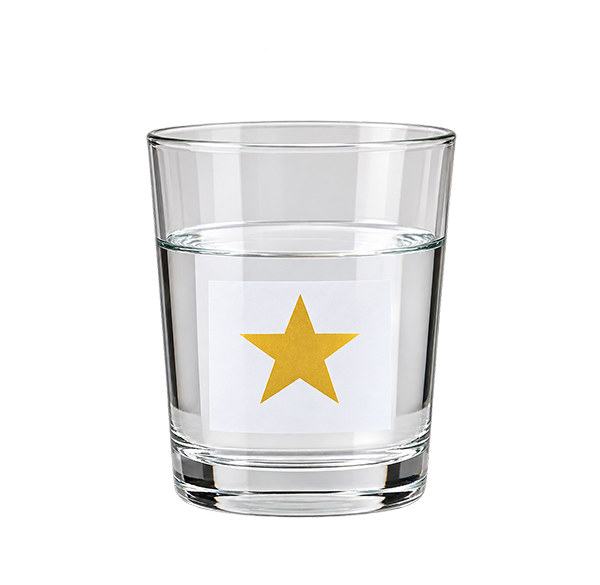
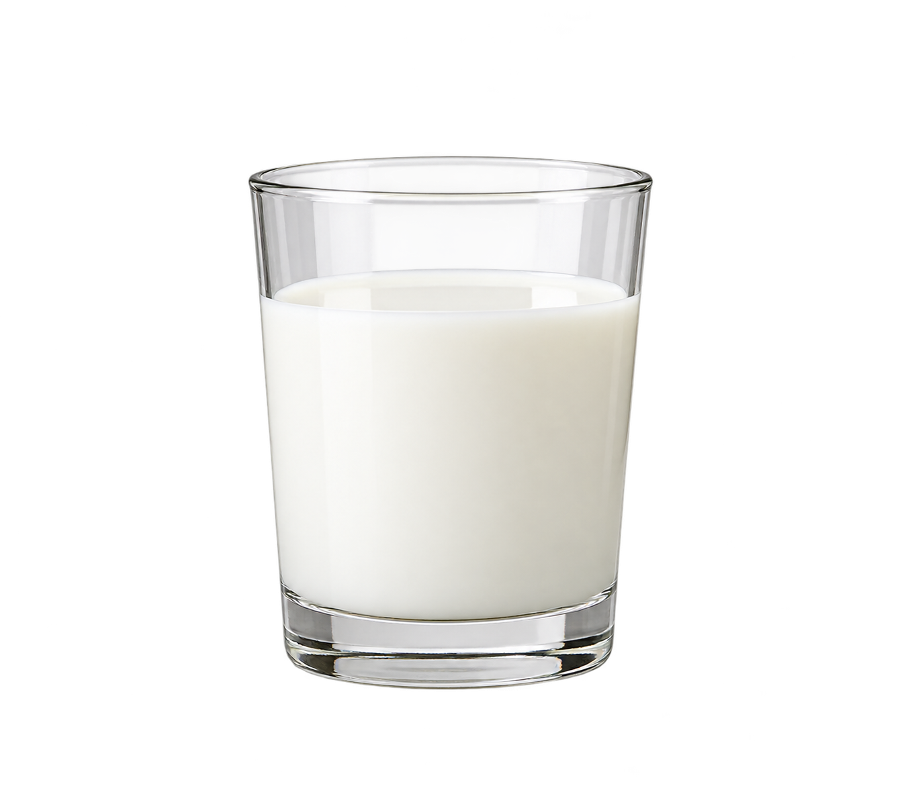
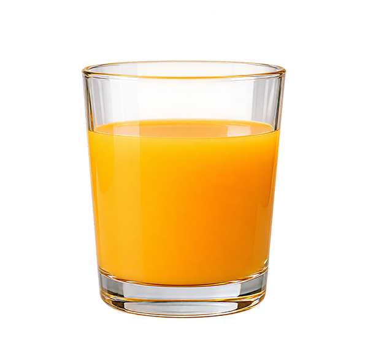
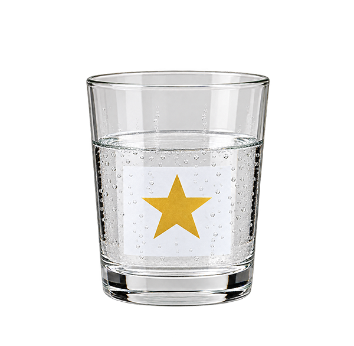

액체의 특징을 먼저 살펴볼까요?
| 액체 | 색깔 | 투명한지 | 공기 방울 |
|---|---|---|---|
 물 | 색이 없어요 | 투명해요 | 없어요 |
 우유 | 하얀색이에요 | 투명하지 않아요 | 없어요 |
 오렌지주스 | 주황색이에요 | 투명하지 않아요 | 없어요 |
 사이다 | 색이 없어요 | 투명해요 | 있어요 |
색깔
투명한지
공기 방울
특징표를 다시 한번 살펴볼까요?